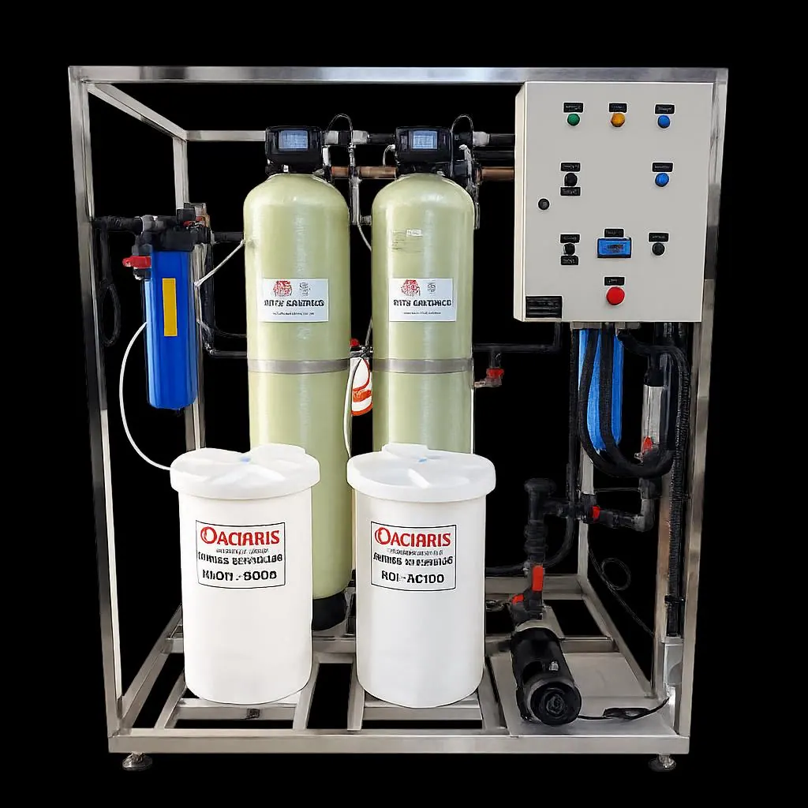

Água para hemodiálise: sistema completo conforme a RDC 11/2014.
Cloro residual, metais pesados e bactérias na água de diálise podem causar reações graves nos pacientes. O sistema da Aclaris trata cada um deles.
Em resumo
A água de hemodiálise precisa seguir a RDC 11/2014 da Anvisa e normas internacionais como a ISO 23500. O sistema da Aclaris reúne filtros de carvão ativado, abrandadores, osmose reversa dupla e polimento final com resinas e ultrafiltração, com monitoramento da condutividade e testes de cloro.
As quatro etapas do sistema
Controle e continuidade
Monitoramento da água e suporte técnico depois da instalação.
Mesmo pequenas impurezas na água de diálise, como cloro residual, metais pesados ou bactérias, podem causar febre, infecções ou intoxicações nos pacientes.
- Monitoramento da condutividade
- Testes de cloro
- Regeneração das resinas com controle individualizado e rastreabilidade por QR Code
- Equipe técnica para suporte contínuo, treinamentos e manutenção preventiva

Perguntas frequentes sobre água para hemodiálise
Que norma regula a água para hemodiálise no Brasil?
A RDC 11/2014 da Anvisa, além de normas internacionais como a ISO 23500.
Quais etapas compõem o sistema de tratamento?
Filtros de carvão ativado para remover cloro, abrandadores para controlar a dureza, osmose reversa dupla para remover sais, metais e contaminantes, e polimento final com resinas e ultrafiltração para a pureza microbiológica.
O que a Aclaris monitora no sistema?
A condutividade da água e os testes de cloro. As resinas do sistema são regeneradas com controle individualizado e rastreabilidade por QR Code.
A Aclaris oferece manutenção e treinamento?
Sim. A equipe técnica dá suporte contínuo, treinamentos e manutenção preventiva.